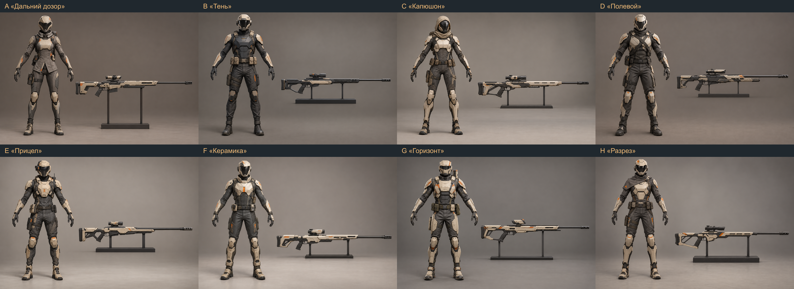
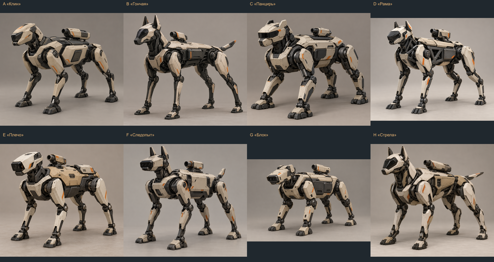

Снайпер людей · открытьВосемь вариантов тела в A-позе с пустыми руками и отдельно показанной винтовки. Редкая сильная обычная атака, прицельный выстрел и трёхсекундная разведка; выбран C «Капюшон».
Робо-пёс поддержки людей · открытьВосемь четвероногих механических силуэтов с закреплённым дымовым гранатомётом. Вместо снятого наводчика. Выбран G «Блок» с боковым гранатомётом; состав способностей, числа, исследования и производство ещё обсуждаются.